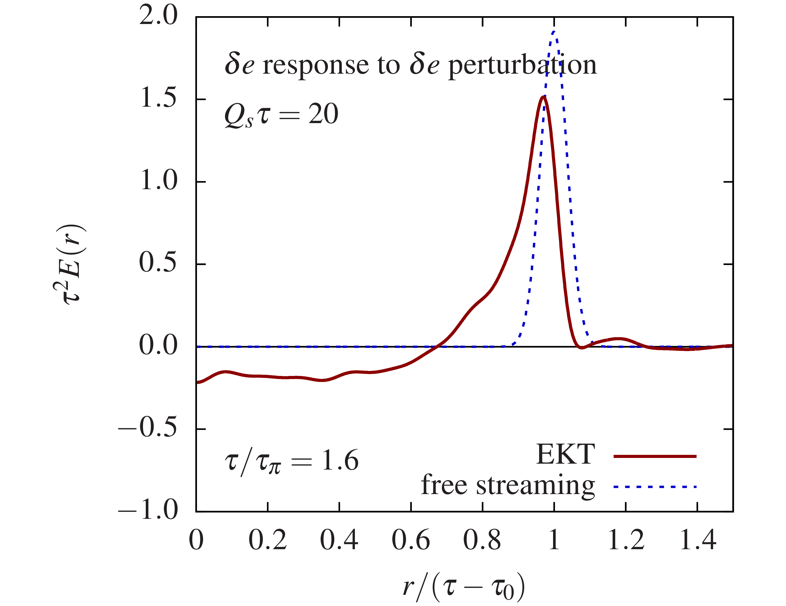
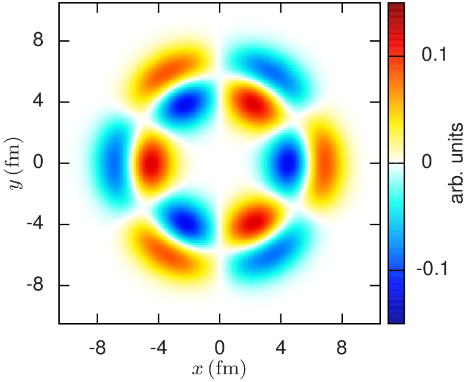
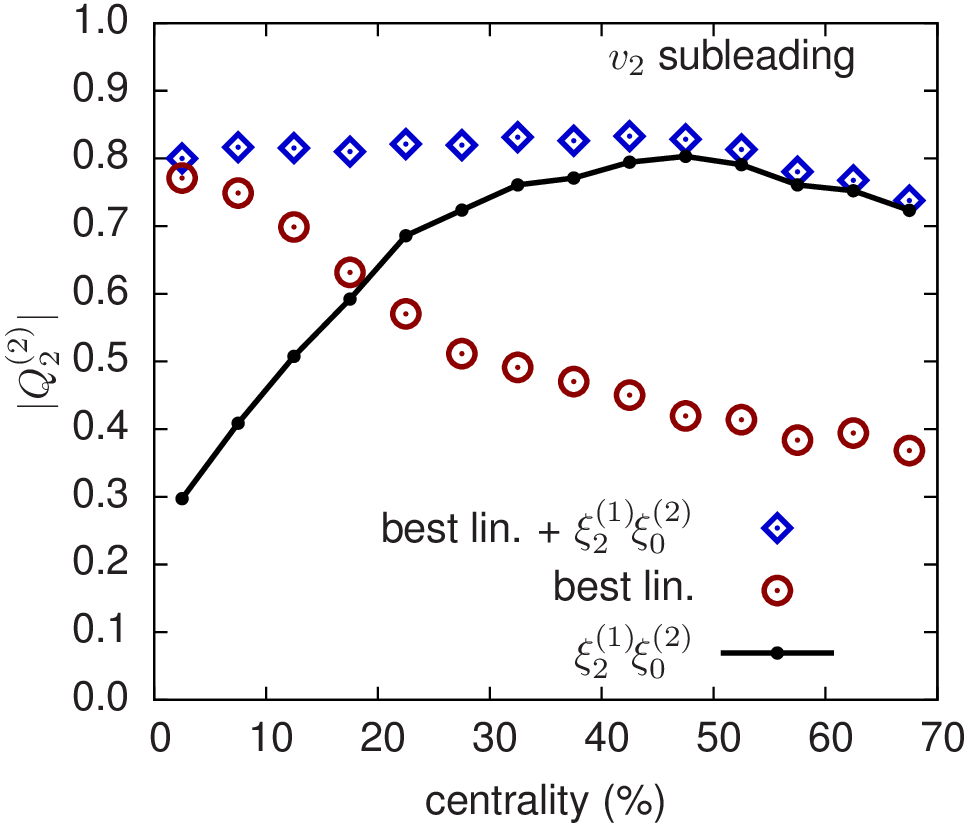
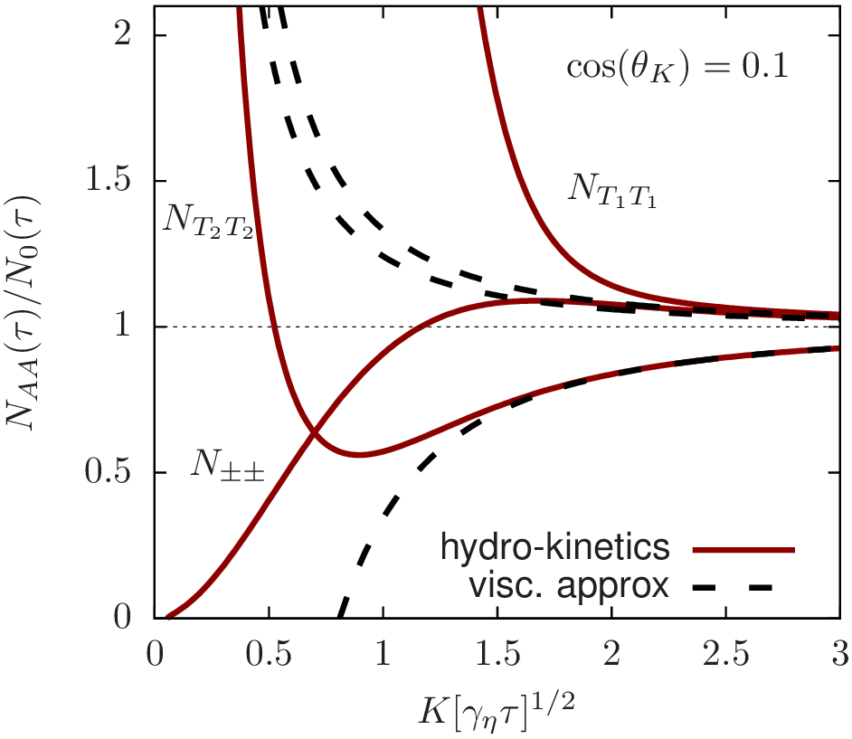
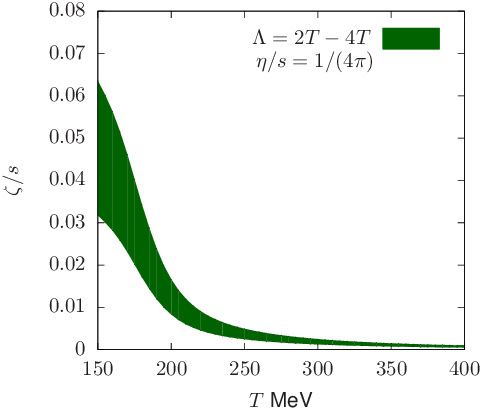

I am interested in high multiplicity particle collisions at LHC and RHIC, because they can create Quark Gluon Plasma — a new form of matter, where protons and neutrons melt into quarks and gluons. Astonishingly, these tiny droplets of matter interact so strongly, that they can be effectively described as a fluid — the perfect fluid. Understanding the properties of QCD matter at extreme conditions is the aim of my research.
For a list of my publications click here
We use effective kinetic theory accurate in weak coupling to model system equilibration and smooth transition to hydrodynamics. We include two to two elastic gluon scatterings and one to two medium induced collinear splittings with LPM suppression. We obtain Green functions for equilibration of small energy and momentum perturbations around far-from-equilibrium background.

Show abstract JHEP 1608 (2016) 171 arXiv:1605.04287
We use effective kinetic theory, accurate at weak coupling, to simulate the pre-equilibrium evolution of transverse energy and flow perturbations in heavy-ion collisions. We provide a Green function which propagates the initial perturbations to the energy-momentum tensor at a time when hydrodynamics becomes applicable. With this map, the complete pre-thermal evolution from saturated nuclei to hydrodynamics can be modelled in a perturbatively controlled way.
PCA is a statistical technique allowing to decompose multidimensional data into most significant components. We show that the subleading elliptic flow in peripheral collisions is dominated by the nonlinear mixing between the leading elliptic flow and radial flow fluctuations.

Show abstract PRC 91 044902 arXiv:1501.03138
We perform a principal component analysis (PCA) of v3(pT) in event-by-event hydrodynamic simulations of Pb+Pb collisions at the Large Hadron Collider (LHC). The PCA procedure identifies two dominant contributions to the two-particle correlation function, which together capture 99.9\% of the squared variance. We find that the subleading flow (which is the largest source of flow factorization breaking in hydrodynamics) is predominantly a response to the radial excitations of a third-order eccentricity. We present a systematic study of the hydrodynamic response to these radial excitations in 2+1D viscous hydrodynamics. Finally, we construct a good geometrical predictor for the orientation angle and magnitude of the leading and subleading flows using two Fourier modes of the initial geometry.

Show abstract PRC 93 024913 arXiv:1509.07492
We analyze the spectrum of harmonic flow, vn(pT) for n=0--5, in event-by-event hydrodynamic simulations of Pb+Pb collisions at the CERN Large Hadron Collider (sNN−−√=2.76TeV) with principal component analysis (PCA). The PCA procedure finds two dominant contributions to the two-particle correlation function. The leading component is identified with the event plane vn(pT), while the subleading component is responsible for factorization breaking in hydrodynamics. For v0, v1, and v3 the subleading flow is a response to the radial excitation of the corresponding eccentricity. By contrast, for v2 the subleading flow in \emph{peripheral collisions} is dominated by the nonlinear mixing between the leading elliptic flow and radial flow fluctuations. In the v2 case, the sub-sub-leading mode more closely reflects the response to the radial excitation of ε2. A consequence of this picture is that the elliptic flow fluctuations and factorization breaking change rapidly with centrality, and in central collisions (where the leading v2 is small and nonlinear effects can be neglected) the subsub-leading mode becomes important. Radial flow fluctuations and nonlinear mixing also play a significant role in the factorization breaking of v4 and v5. We construct good geometric predictors for the orientation and magnitudes of the leading and subleading flows based on a linear response to the geometry, and a quadratic mixing between the leading principal components. Finally, we suggest a set of measurements involving three point correlations which can experimentally corroborate the nonlinear mixing of radial and elliptic flow and its important contribution to factorization breaking as a function of centrality.
We develop a set of kinetic equations for hydrodynamic fluctuations which are equivalent to nonlinear hydrodynamics with noise. We use the hydro-kinetic equations to analyse thermal fluctuations for a Bjorken expansion, evaluating the contribution of thermal noise from the earliest moments and at late times.

Show abstract PRC 95 014909 arXiv:1606.07742
We develop a set of kinetic equations for hydrodynamic fluctuations which are equivalent to nonlinear hydrodynamics with noise. The hydro-kinetic equations can be coupled to existing second order hydrodynamic codes to incorporate the physics of these fluctuations. We first show that the kinetic response precisely reproduces the renormalization of the shear viscosity and the fractional power (∝ω3/2) which characterizes equilibrium correlators of energy and momentum for a static fluid. Then we use the hydro-kinetic equations to analyze thermal fluctuations for a Bjorken expansion, evaluating the contribution of thermal noise from the earliest moments and at late times. In the Bjorken case, the solution to the kinetic equations determines the coefficient of the first fractional power of the gradient expansion (∝1/(τT)3/2) for the expanding system. Numerically, we find that the contribution to the longitudinal pressure from hydrodynamic fluctuations is larger than second order hydrodynamics for typical medium parameters used to simulate heavy ion collisions.

Show abstract PRC 97 024902 arXiv:1708.05657
Hydro-kinetic theory of thermal fluctuations is applied to a non-conformal relativistic fluid. Solving the hydro-kinetic equations for an isotropically expanding background we find that hydrodynamic fluctuations give ultraviolet divergent contributions to the energy-momentum tensor. After shifting the temperature to account for the energy of non-equilibrium modes, the remaining divergences are renormalized into local parameters, e.g. pressure and bulk viscosity. We also confirm that the renormalization of the pressure and bulk viscosity is universal by computing them for a Bjorken expansion. The fluctuation-induced bulk viscosity reflects the non-conformal nature of the equation of state and is modestly enhanced near the QCD deconfinement temperature.